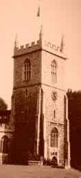

St. Dunstan, Stepney
Details of the Bells
| Treble | 6-2-0 | F | 1952 | Mears & Stainbank |
| 2 | 7-1-7 | Eb | 1806 | Thos Mears & Son |
| 3 | 7-2-12 | Db | 1806 | Thos Mears & Son |
| 4 | 8-1-27 | C | 1952 | Mears & Stainbank |
| 5 | 9-0-26 | Bb | 1806 | Thos Mears & Son |
| 6 | 11-2-6 | Ab | 1806 | Thos Mears & Son |
| 7 | 13-3-27 | Gb | 1806 | Thos Mears & Son |
| 8 | 17-1-26 | F | 1952 | Mears & Stainbank |
| 9 | 23-2-16 | Eb | 1806 | Thos Mears & Son |
| Tenor | 31-1-7 | Db | 1806 | Thos Mears & Son |
Sound Clips:
PART OF A QUARTER PEAL OF RUTLAND S.ROYAL 1999
PART OF A QUARTER PEAL OF OXFORD TREBLE BOB MAJOR (BACK 8) 2001
THE FINAL HOUR OF THE PEAL OF LONDON NO.1 S.ROYAL RUNG FOR A.S.C.Y. 11 NOV 2007
You will need to download a program such as Softe Audio Player to play this file of London No.1 as it is a .AMR file recorded on a mobile phone.. You can find and download Softe Audio Player online.
PART OF A QUARTER PEAL OF OXFORD TREBLE BOB MAJOR (BACK 8) 2001
THE FINAL HOUR OF THE PEAL OF LONDON NO.1 S.ROYAL RUNG FOR A.S.C.Y. 11 NOV 2007
You will need to download a program such as Softe Audio Player to play this file of London No.1 as it is a .AMR file recorded on a mobile phone.. You can find and download Softe Audio Player online.
Ringing Times:
Sunday: 9:15am and some eveningsPractice: Thu 7:30pm; a local band is in training.
Captain: Johnathan Slack
History:
| Pre-1806 | A very large peal of 8 hung in the tower. There are various records of some pretty lethal occurences with bells falling out of the frame etc, which history and later histories is described in this link. |
| 1806 | Thomas Mears & Son cast a new peal of ten for the tower and hung them in a large wooden frame. |
| 1808 | The Junior Society of Cumberland Youths rang the first peal on the bells, Grandsire Quators. This Society provided ringing until about the 1830's, as they also did at Bethnal Green, Shadwell and other towers in the vicinity. |
| 1850's - 1910 | Between these dates the Ancient Society of College
Youths had a regular association with the tower and rang many peals
on the bells. Members of the local band in the 19th century
included James Dwight (an excellent heavy-bell ringer who rang the
tenor at St Michael, Cornhill to the legendary 8580 Steman Cinques in 1861 and composed a song in doggerel verse which he used to sing at the Ancient Society of College Youths
annual dinners.) Walter Jones was another very capable local
member; somewhat younger than Dwight, and became a founder member of
the band at St Pauls Cathedral. After 1910 the link between
the College Youths was maintained, but in a much looser form - the
Society would still ring occasional peals on the bells, and held
practices there from time-to-time. Stepney bells were always
held in high regard by the old London ringers on account of their
excellent tonal qualities.  |
| 1907 | The first peal of 'real' London S. Royal (previously known also as Stepney S. Royal, and now known as London No1) was rung. Of course in truth, being as No's 2 & 3 were first pealed at Brighton and Beddington respectively, it is in fact the only real London Royal. Mr A.B. Peck was in the band which rang this peal, and in his later life when Secretary of the College Youths, if a peal of London Royal was given out at the meeting he would enquire "WHICH ONE?!!", and woe betide if it wasn't No 1! The answer if it wasn't No 1 would be "WELL THAT'S NOT REAL LONDON THEN!!!!" |
| 1912 | "Bell News and Ringers Record" for May 18th stated thus
"Known as the 'Sailors Parish' and gaining the reputation as the
largest Parish in the world, it was peculiarly fitting then that the
awful disaster to the 'Titanic' should be commemorated at St Dunstan's
by a muffled Peal, rung on May 9th, by request of the Vicar, Rev. G.C.
Wilton. Another, and perhaps the primary reason which associates
the Peal with the disaster is that some of those who perished went away
from the East-End, among them the Rev. and Mrs.Carter. The peal,
5007 Stedman Quators was conducted by Mr Herbert Langdon. Many
people assembled in the church grounds to listen. The thanks of
the ringers, whose names appear in our peal columns, are tendered to
the Rector for the use of the bells, and to the towerkeeper for having
them in such good going order. |
| 1930's | A new local band formed under the name of the Stepney Scholars. Leonard and Thomas Fox learned to ring at Stepney, and subsequently joined the Ancient Society of College Youths, and maintained the link between that Society and Stepney. The first peal by this new Company which was also rung for the London County Association was in 1937 for the Coronation of King George VI. |
| 1952 | The bells were taken down, and the 3 'naturals' recast by Mears & Stainbank. The old wooden frame was cleared away and the bells rehung on ball-bearings in a new metal frame. A foundry band of ringers began to provide the ringing and maintenance at the tower. |
| Mid 1990's | Virtually all ringing ceased due to lack of ringers in the local area. |
| October 1999 | Mr C.J. Cooper approached Mr Arthur Cuthbert, the then tower captain and foundry handbell tuner and offered to carry out maintenance to the bells and tower, to which Mr Cuthbert readily agreed. All the old peal boards which had previously been stored in the clock room were cleaned, and brought down into the ringing room awaiting rehanging on the walls. The ropes were checked and many were spliced in order to keep them ringing. The tenor and ninth clappers were found to be very loose and in danger of falling out. These clappers were tightened, but unfortuanately the lock-nut on the tenor clapper appeared to have disappeared. The Church gratefully accepted the offer of the ASETY providing ringing whenever possible. |
| 2000 | Some individuals who do not share the ideals of the ASETWY unfortunately felt the need to rubbish the work and effort perpetuated by the ASETWY to the Church officials at Stepney. Thankfully, unlike most ringers, the Church decided to base it's decisions on the time and effort and standard of ringing perpetuated by the ASETY rather than heresay from those who are seeking to undermine these ideals. In this year too, a new Ellacombe chiming mechanism was installed by the Whitechapel Foundry, and the ASETWY provided instruction on how to produce musical changes on the apparatus. The foundry also provided new pulley blocks for each bell, and new ropes, and fitted the ropes free of charge. Unfortunately for reasons which are not entirely clear, the tenor clapper was not dealt with. |
| 2001 | The tenor clapper continued to loosen, and the bell would not 'go up right' because of this. After the ninth's rope guide was removed the rope also would not drop through the floor correctly, effectively rendering the bells unringable. Following a quarter peal attempt for Oxford T.B. Major which failed after 20 minutes due to the 'bad going' of the ninth and Tenor (the Tenor clapper had virtually fallen out!), the ASETWY resolved to re-instate a rope guide on the ninth, and fix the tenor clapper back into the bell with a new lock-nut; which deeds were accomplished in the latter part of November 2001. All who have rung there since, agree that the bells are much easier than they were. They will always 'suck and blow' however, due to the peculiar layout of the bells in the frame due to space restrictions. |
| 2003 | The third clapper hit the ellacombe hammer which had worked loose, and broke. This clapper was repaired by Whites of Appleton, (transported there and back by a member of ASETWY to save the church expense of carriage) and replaced in the bell by the Conductor and Steeplekeeper |
| 2005 | The bells were out of action from 15th August until the end of the year while scaffolding was built amongst the bells to enable builders to repair the tower roof and battlements. |
| 2006 | Tenor clapper broke at the beginning of a peal attempt, smashing the Tenor's Ellacombe board. The clapper was welded and replaced by Whitechapel Foundry. |
| 2007 | Nov 11th: A peal of London (No.1) S. Royal was successfully rung for the ASCY, and marking the centenary on that day of the original peal in the tower, rung using the same composition. A peal board is to be made professionally, recording both the 1907 & 2007 peals. At Evensong, Mr C.J. Cooper was presented with a quantity of fine ale as a thank-you gesture for his arranging the ringing at Stepney for the previous eight years. A new local band is now in existence, under the Captaincy of Johnathan Slack. This is the first time Stepney has had a local band for very many years. |

{kind=link}
{kind=link}
{kind=link}
{kind=link}